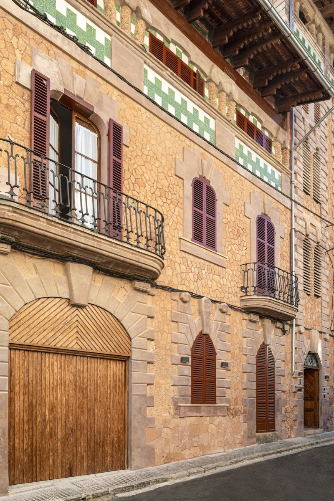
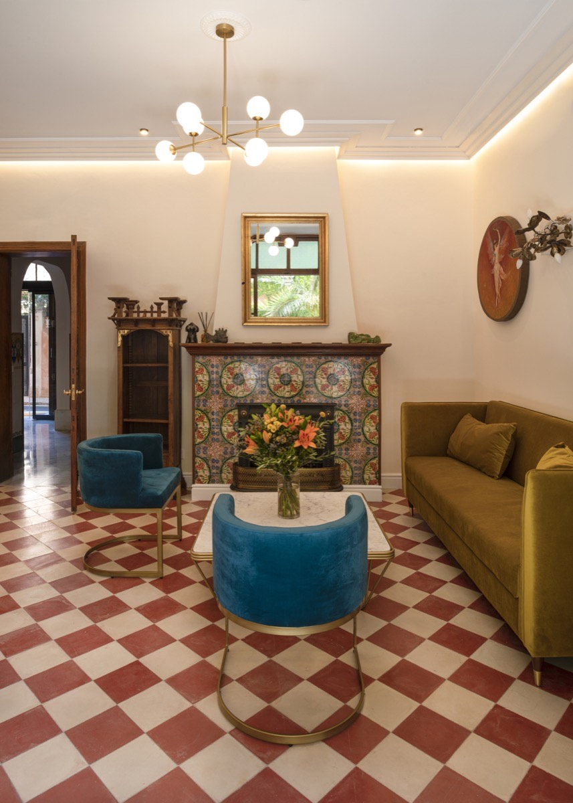

EN


A Modernist Palace
Heritage, elegance and Mediterranean soul since 1908
Welcome to Can Quetglas, a carefully restored modernist palace nestled in the heart of El Terreno, one of Palma de Mallorca's most charming and historic neighbourhoods. Our boutique hotel offers an intimate retreat where the grandeur of the past blends seamlessly with contemporary comfort, creating an experience that is both timeless and uniquely Mallorcan.

Architectural Heritage
Built in 1908 during the golden age of Mallorcan modernism, Can Quetglas stands as a testament to the island's rich architectural heritage. The building showcases the distinctive style of the era, with elegant facades, ornate ironwork, and intricate decorative details that speak to the craftsmanship of a bygone age.
Every corner of our palace reveals original features that have been lovingly preserved: hand-painted frescoes, hydraulic tile floors with geometric patterns, carved wooden doors, and stained glass windows that cast dancing colors across our rooms.

Protected Heritage
Can Quetglas holds the distinction of being a catalogued heritage building, recognised for its historical and architectural significance. This designation reflects our commitment to preserving not just a structure, but a piece of Palma's cultural identity.
Our restoration was carried out with the utmost respect for the building's original character. Working closely with heritage conservation experts, we have maintained the authentic elements while thoughtfully integrating modern amenities to ensure your comfort.
"To stay at Can Quetglas is to experience the soul of Mallorca — its history, its light, its enduring beauty."
Our Neighbourhood
El Terreno was once the glamorous summer retreat of Palma's aristocracy and international celebrities. In the early 20th century, this hillside neighbourhood attracted artists, writers, and bohemian spirits who were drawn to its Mediterranean gardens, stunning views, and creative energy.
Today, El Terreno is experiencing a renaissance. Just minutes from the historic centre and the seafront, yet peacefully removed from the crowds, it offers the perfect base to explore Palma while enjoying the authentic atmosphere of a traditional Mallorcan neighbourhood.
Can Quetglas is built as a private residence, showcasing the finest modernist architecture of the era.
The current owners acquire the property and undertake a major renovation, transforming it into their family residence.
The owners decide to share this architectural gem with the world, beginning the transformation into a boutique hotel.
In July 2022, Can Quetglas opens its doors as a boutique hotel, welcoming guests from around the world.
Discover our rooms, each one a unique blend of historic charm and modern comfort.
View Our Rooms